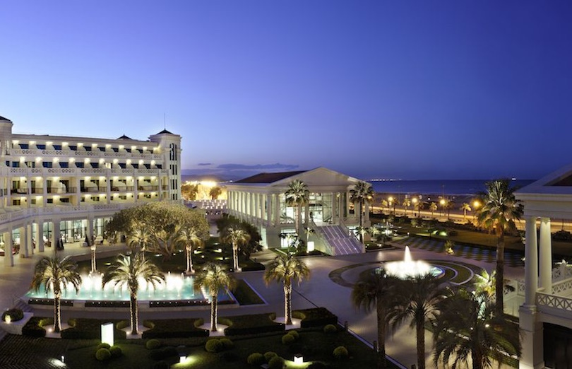

Hotel Las Arenas Balnerario
Just steps from the Las Arenas Beach in Valencia and within close proximity to attractions like L’Oceanografic and the Queen Sofia Palace of the Arts, this beautiful beach resort in Spain features 2 restaurants, a poolside bar, 3 swimming pools, a full-service spa and fitness equipment.
Rooms at the Hotel Las Arenas Balnerario include air conditioning, wireless Internet access, bathrobes and slippers in addition to terraces that open to views of the sea. Outdoor recreation and beach fun includes golf, cycling, squash, swimming, sailing, paddle boating and volleyball.

Hotel Las Arenas Balnerario, Valencia, Spain
©2019 Vacation Spots
Top